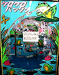
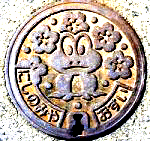
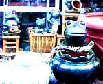

|
カエルケーキでハッピーバースデー！【熊本発=のんたん同志記者】のんたんです。さて、私のバースディに家族が準備してくれたモノです！どうです！ かわいいでしょ！！でも、モノがケーキということで、喜んでいいのか苦しんでいいのか・・・結局、私はナイフを入れることが出来ず、周りのフルーツだけを食しました。美味しかった〜♪
カエル部分は誰が食べた？！【全国かえる奉賛会】なんという素晴らしい親であろうか！カエラーとして成長したわが子のために、ケーキ屋にカエルケーキを特注するなんて。次回からはカエラー御用達となるケーキ店だろうから、いまのうちに量産体制を作って大量受注に耐えうるようにしておきましょー。それにしてもうらやましいぞー。ところで、カエル部分は誰が食べたのであろうか！のんたんでないとすると家族の誰か？それとも、いまだに冷蔵庫に収納しているとか？？
全国初のカエルグッズ専門店「リビットリビット」閉店！ 【福岡発=かえる店長同志記者】皆様に御愛顧いただきましたカエルの店は11月1日をもちまして閉店いたします。ちょうどその日が開店5周年にあたります。皆様への感謝の気持ちをチョット込めて、閉店セールを行いますので、お近くにお越しの際にはぜひお立ち寄りください。なお、次の目標に向けて、予備校？に通っているので、私の出勤日は以下の通りです。 日曜=1時から7時、月曜=1時から4時、木曜=1時から7時（ちなみに29日の日曜日は大親友の結婚式なのでお休みします。） 私がいない間はいっしょにお店をしている人がいますので、営業はしています。（火曜日も営業中）皆様のお越しをお待ちしています！
「ケロケロパックン」を５万円で販売【全国かえる奉賛会】かえる新聞の創刊当時の平成９年2月8日号や2月10日号で紹介した、カエルグッズ専門店は、当時ブームの到来前で、全国に一軒もなかった時代に創業したショップであった。店長の先見性と時代の流れを読むするどさに感激したものである。
残念なことではあるが、店長の新しい出発を祝福しようではないかああああ。 カエルサボテンが市営公園で展示会！ 【福岡発カエルサボテン少女同志記者】カエルサボテンのミニミニ展示会を開きます。売り切れ中で買えない人や、ホームページを見れない人にも、カエルサボテンを生で見てほしい！！！
【福岡発カエルサボテン少女同志記者】カエルサボテンのミニミニ展示会を開きます。売り切れ中で買えない人や、ホームページを見れない人にも、カエルサボテンを生で見てほしい！！！そしてなごんでほしい！！！、、、と考え提案しました。なんせ突然の思いつきで決めたので、作品点数はかなり少ないですが…。当日みなさんに会ってお話ししたり、意見を聞かせてもらったりする事を楽しみにしています！ ※カエルサボテン、携帯ストラップ、ポストカード、イラストなど展示予定。公園内での物品の販売は禁じられており、許可がおりなかったので販売は、後日ホームページけろテン市場での販売となります。
兵庫県西宮にカエルマンホール！ 【兵庫発ｋｅｒｏｙａｎ同志記者】『ケロケロンパーク』を運営しているｋｅｒｏｙａｎです。兵庫県西宮市の街のマンホールでカエルが頑張っているので報告します。直径２０ｃｍくらいなので、そんなに大きくはないのですがいかがでしょう？ナイスだと思っています。
【全国かえる奉賛会】カエルマンホール収集家とか現れたら、全国各地のマンホールふたを集めて展示してみたくなるだろうなー。
 沖縄にもカエルグッズ店出現！【沖縄発flatkuma同志記者】名護市に行って来ました先日サミットの会場にもなった万国津梁館のすぐ先に道路沿いでカエルの置物を見つけました。家の人に尋ねるとべトナムからの輸入品で売り物とのこと。楽器の蛙が６０００円。カエルの鉢が１００００円と言っていました。同店の住所，電話は〒905-0025 名護市字幸喜１４１番地「アジアウインド」棚原さん0980-54-2139
JCBにキャンペーンカエル！【福岡発しげやん同志記者】おはようございます。JCBのキャンペーンでカエル“小ネタ”です。まずは見に行きましょう。しげやん●福岡市在住のオス♂●動物占い…「ライオン」●昆虫占い…「バッタ」
投稿採用者に武功カエル徽章を授与！ |
かえる古新聞過去に取り上げた記事を見出し付きで一覧したい人は、ここをクリック◆創刊号を見る◆先週号を見る◆話題の号を見る◆かえる新聞の昔を読む◆COOL NET FROG RANKING !
|
私も入っています。。全国かえる奉賛会
大王様に会うには、このバナーをクリック。ずっと奥に写真館があるぞ。全国かえる奉賛会に入会するには、自分のホームページのどこかに、下の部分を追加するとバナーがリンク付きで表示されるぞ。どんどん入会しましょー |


|